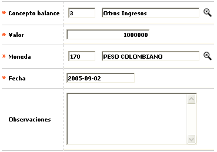
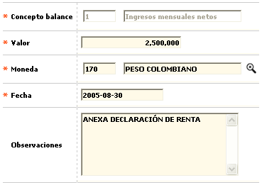

Novedad balance cliente
En este formulario invocado desde la opción consulta de clientes, a través del hipervínculo Financiera en el bloque Información balance , la entidad puede efectuar el ingreso o modificación de los datos inherentes a los componentes de los ingresos y egresos del cliente.
Esta información puede ser de utilidad para la entidad por ejemplo al momento de evaluar o calificar al cliente respecto de la capacidad de endeudamiento para responder por las obligaciones adquiridas.
El formulario contiene los enlaces: Actualizar,Eliminar y Adicionar.
Adicionar: Al activar ese enlace se despliega un formulario con los siguientes campos:

Descripción de campos
Concepto balance |
En este campo obligatorio que posee lista de valores se debe seleccionar el concepto de ingreso o egreso reportado por el cliente. |
Valor |
Campo numérico de 14 enteros y 2 decimales, obligatorio, en el que se registra el monto del ingreso o egreso reportado por el cliente y expresado en la moneda indicada en el campo siguiente. |
Moneda |
En este campo obligatorio que cuenta con lista de valores se selecciona la moneda en la cual se encuentra expresada el ingreso / egreso reportado por el cliente. |
Fecha |
Campo obligatorio en formato YYYY-MM-DD en el que se registra la fecha a partir de la cual rige o debe tenerse en cuenta el ingreso o egreso reportado por el cliente. |
Observaciones |
En este campo alfanumérico, no obligatorio, de hasta 255 caracteres se permite registrar una breve descripción o datos adicionales esenciales sobre el concepto o item del estado de ingresos y egresos. |
Actualizar: Si el usuario selecciona un registro e invoca la opción Actualizar se despliega un formulario en el cual el único campo NO modificable es el Concepto.
